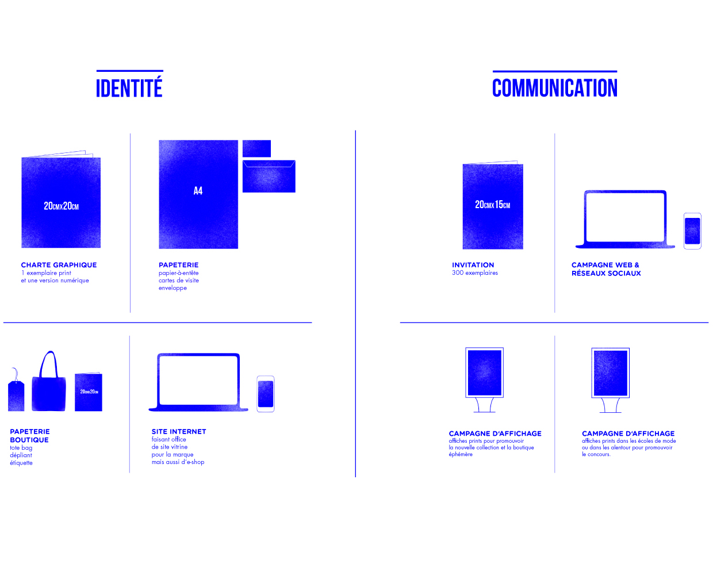
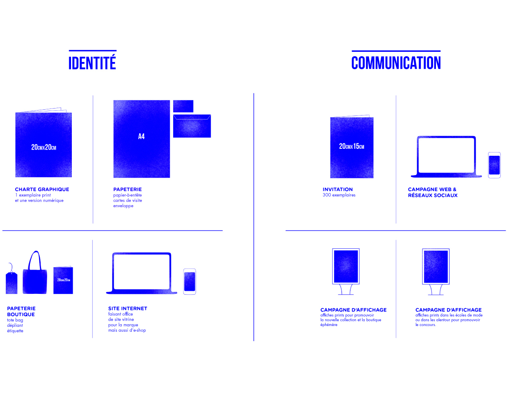

For this project, the fashion label UNIS was invented. The task was to develop a complete communication strategy for the label, including the design of all supports from print to application and a marketing campaign.
The mission of UNIS is to promote the work of fashion students, to make them visible beyond their university. Given the professional context, the brand wants to offer them opportunities for creative expression.
UNIS concept is to sell original and singular clothes in a limited edition, targeted to men and women between 20 and 30 years old, who are interested in fashion and its artistic dimension. The label uses a dynamic, contemporary tone to communicate these values.
For the brand's communication, we designed classical print devices like business cards, stationery, envelopes, labels for fashion shops, bags, flyers, and posters. Additionally, a website including an online shop and an application were created.
Trough all these supports, UNIS informs about the actual designer, their collections, the location of the brand's shop (changing each season, as is the designer promoted), and the brand itself.
The illustrative base for the brand's visuals is a set of abstract motives rooted in the universe of fashion (clothing, mannequin etc.). These motives are adapted for every device - e.g. they are animated for the website or modified for the different print supports.
Credits: Marine Audebert, Camille Champémont, Margot Carrier, Julia Ahrend, Anthony Bataille, Mathieu Andrieux
music by Nctrnm „Queue“
École de Condé Paris
Comunication strategy
Winter Term 2017/18